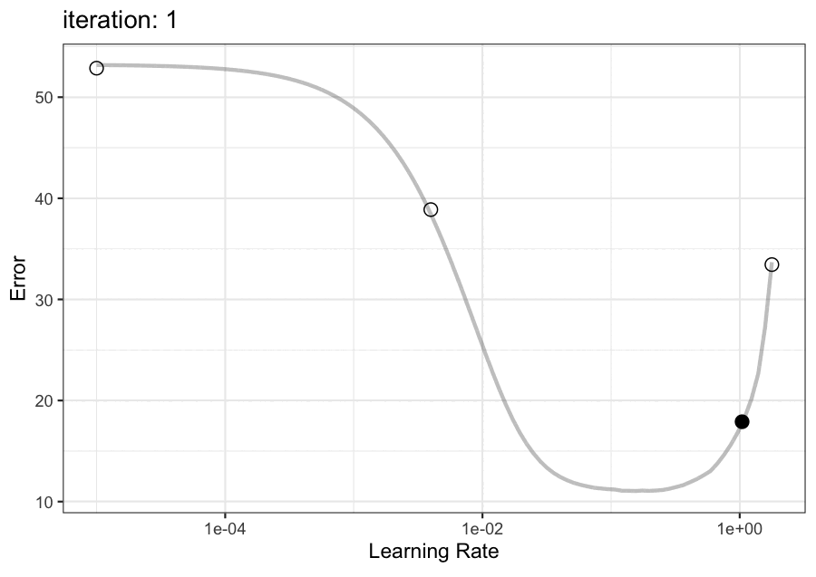

9 Overfitting
This chapter describes the most crucial concept in predictive modeling: overfitting. When a model fails, it is almost always due to overfitting of some sort. The problem is that you may only realize that there is an issue once you finish the development phase of modeling and are exposed to completely new data.
To get started, we’ll discuss model complexity and how it can be both good and bad.
9.1 Model Complexity and Overfitting
Many predictive models have parameters. For example, the linear regression model initially shown in Equation eq-poly-linear-reg contains slopes and intercepts (the \(\beta\) values) estimated during model training using the predictor and outcome data. In other words, it is possible to write the equations to solve to estimate these values.
However, in that same equation, a series of polynomial terms were used. The number of additional features is also a parameter but, unlike the \(\beta\) coefficients, it cannot be directly estimated from the data. Equation eq-poly-linear-reg arbitrarily used three terms for the predictor \(x\).
Two other models were discussed in sec-whole-game. First, the tree-based model shown in Figure fig-reg-tree had five splits of the data. This led to a model fit that resulted in six regions of the \(x\) space, each with its specific predicted value. We could have continued to split the training set into finer and finer partitions so that the fitted curve more effectively modeled the observed data. As such, the depth of the tree was a parameter that needed to be set before the model fit could be estimated.
Similarly, the neural network required the number of hidden units to be defined (among other values). We weren’t sure what that should be, so a set of candidate values were assessed, and the one with the best results was used for the final model fit (see Figure fig-delivery-nnet-tune). We’ve also seen specific tuning parameters in sec-feature-hashing, sec-combining-categories, and also for the embedding methods in sec-embeddings.
In each of these cases, there was a tuning parameter (a.k.a., hyperparameter) that defined the structure of the model and could not be directly estimated from the data. Increasing the parameter’s value for each model made the model’s potential structure more elaborate. The effect of this increase in the model’s complexity is additional capability to adapt to any pattern seen in the training data. The straight line fit associated with a linear regression model without polynomial terms would have done an abysmal job on such a nonlinear data set. Adding additional complexity allowed it to better conform to the training set data.
The problem is that added complexity can also add risk. Being more capable of adapting to subtle trends in the training data is only a good thing when such trends generalize to other data. Recall in sec-effect-encodings where we were estimating the effect of an agent on the price of a hotel room. One agent had a single booking. The naive estimate of the ADR wouldn’t generalize well. As they accrue more and more bookings, their mean would undoubtedly change to a more realistic value. Using the raw ADR value would “overfit to the training set data.”
For many sophisticated models, the complexity can be modulated via one or more tuning parameters that detect inconsequential patterns in the training data. The problem is that they may go too far and over-optimize the model fit.
As an example, Figure fig-two-class-overfit shows a scenario where there are two predictors (A and B) and each point belongs to one of two classes (vermilion circles or blue triangles). These data were simulated and panel (a) shows a thick grey line representing the true class boundary where there is a 50% chance that a data point belongs to either class. Points to the left of the grey curve are more likely to be circles than points to the right. The curve itself has a smooth, parabolic shape.
We can fit a model to these data and estimate the class boundary. The model we used1 has a tuning parameter called the cost value. For now, you can think of this parameter as one that discourages the model from making an incorrect prediction (i.e., placing it on the wrong side of the estimated boundary). In other words, as the cost parameter increases, the model is more and more incentivized to be accurate on the training data.
When the cost is low, the results are often boundaries with low complexity. Figure fig-two-class-overfit(b) shows the result where the fitted boundary is in black; points on the left of the boundary would be classified as circles. There is some curvature and, while correctly classifying the points in the middle of the training set, it could do a better job of emulating the true boundary. This model is slightly underfit since more complexity would make it better.
When the cost is increased, the complexity also increases (Figure fig-two-class-overfit(c)). The boundary is more parabolic, and a few more training set points are on the correct side of the estimated line.
Figure fig-two-class-overfit(d) shows what occurs when the model is instructed that it is incredibly bad when incorrectly predicting a data point in the training set. Its boundary contorts in a manner that attempts to gain a few more points of accuracy. Two specific points, identified by black arrows, appear to drive much of the additional structure in the black curve. Since we know the actual boundary, it’s easy to see that these contortions will not reproduce with new data. For example, it is implausible that a small island of vermilion circles exists in the mainstream of blue triangles.
Another sign that a model probably has too much complexity is the additional component of the decision boundary at the bottom of Figure fig-two-class-overfit(d) (red arrow). Points inside this part of the boundary would be classified as triangles even though no triangles are near it. This is a sort of “blowback” of an overly complex model where choices the model makes in one part of the predictor space add complexity in a completely different part of the space. This blowback is often seen in areas where there are no data. It’s unnecessary and points to the idea that the model is trying to do too much.
This boundary demonstrates how added complexity can be a bad thing. A test set of data was simulated and is shown in Figure fig-two-class-new. The performance for this overly complex model is far from optimal since the extra areas induced by the high cost value do not contain the right class of points.
Our goal is to find tuning parameter values that are just right: complex enough to accurately represent the data but not complex enough to over-interpret it.
9.2 The Ways Models Overfit
This leads us to a formal definition of overfitting:
Overfitting is the situation where a model over-interprets trends and patterns in the training set that do not generalize to new data.
These irreproducible data trends result in models that do very well on the training set but greatly underperform on the validation set.
We can overinterpret the training set data in a few different ways. For example, sec-imbalances will discuss class imbalance problems that occur when one or more outcome classes have a very low probability of occurrence. As models are allowed more complexity, they will often maximize accuracy (or some proxy for it) by simply declaring that all data points belong to the majority class. If there is a 1% event rate, 99% accuracy is easily achievable by overfitting to the majority class.
Another example is overfitting the predictor set. The “low \(N\), high \(P\)” problem (Johnstone and Titterington 2009) occurs when data points are expensive to obtain, but each comes with abundant information. For example, in high-dimensional biology data, it is common to have dozens of data points and hundreds of thousands of predictors. Many models cannot be estimated with this imbalance of dimensions, and often, the first step is to filter out uninformative predictors.
Suppose some statistical inferential method, such as a t-test, is used to determine if a predictor can differentiate between two classes. Small sample sizes make the chance of uninformative predictors falsely passing the filter large. If the same data are then used to build and evaluate the model, there is a significant probability that an ineffective model will appear to be very predictive (Ambroise and McLachlan 2002; Kuhn and Johnson 2019). Again, using a data set external to the model training and development process shows you when this occurs.
Finally, it is possible to overfit a model via sample filtering. For example, in some machine learning competitions, participants might sub-sample the training set to be as similar to the unlabelled test set as possible. This will most likely improve their test set performance, but it generally handicaps a model when predicting a new yet-to-be-seen data set.
9.3 External Data to Measure Effectiveness
By now, it should seem clear that the best way of avoiding overfitting is to quantify the model performance using a separate data set. How do we do that? We’ve said that most modeling projects create an initial partition of the data into training and testing sets. Can the testing set detect overfitting?
We’ll again use the classification data from Figure fig-two-class-overfit to demonstrate, this time with a different model. A boosted tree2 is an ensemble model. The model creates a sequence of decision trees, each depending on the previous, to create a large ensemble of individual trees. For a new sample, each tree is used to predict the outcome, and a weighted average is used to create the predicted class probabilities.
The model has tuning parameters related to the tree (e.g., tree depth) and ones related to the process of building the ensemble (e.g., the number of trees in the ensemble). We’ll use 100 trees to create our ensemble. However, we don’t know how deep the trees should be. One method of controlling the number of splits in a tree is to control how much data should be in a partition to continue splitting. For example, in Figure fig-reg-tree, the left-most terminal node in the tree contained \(n_{tr}\) = 971 data points after all splits are applied. If we keep splitting with no constraint, at some point, the amount of data in the node is too small to continue.
This tuning parameter, we’ll call it \(n_{min}\), is used to moderate the tree-growing process. Small values increase the risk of overfitting; it’s possible to have a single data point left in the terminal node. Large values prevent the tree from accurately modeling the data, and underfitting occurs. What does the trade-off between complexity and performance look like for these data?
We took the training data and fit models using values \(n_{min}\) = 3, 4, …, 80. To understand performance, the Brier score (Brier 1950; Steyerberg 2009) is used. It is an error metric for classification models (similar to RMSE) and measures how close the predicted probabilities are to their binary (i.e., 0/1) values. A Brier score of zero is a perfect model, and ineffectual models tend to have values \(\ge\) 0.25.
Figure fig-complexity-error shows the results. The yellow curve illustrates the Brier score when the training set is re-predicted. There is a sharp increase in error as the tuning parameter values increase. This line suggests that we use very small values. The smallest Brier score is associated with \(n_{min}\) = 3 (producing an effectively zero Brier score).
The purple line shows the Brier score trend on the test set. This tells a different story where small \(n_{min}\) values overfit, and the model error improves as larger values are investigated. The Brier score is lowest around \(n_{min}\) = 39 with a corresponding Brier score estimate of 0.0928. From here, increasing the tuning parameter results in shallow trees that underfit. As a result the Brier score slowly increases.
Contrasting these two curves, data that are external to the training set gives a much more accurate picture of performance. However:
Do not use the test set to develop your model.
We’ve only used it here to show that an external data set is needed to effectively optimize model complexity. If we only have training and testing data, what should we do?
There are two ways to solve this problem:
- Use a validation set.
- Resample the training set sec-resampling.
Both of these options are described in detail in the next chapter.
As previously discussed, validation sets are a third split of the data, created at the same time as the training and test sets. They can be used as an external data set during model development (as in sec-whole-game). This approach is most applicable when the project starts with abundant data.
Resampling methods take the training set and make multiple variations of it, usually by subsampling the rows of the data. For example, 10-fold cross-validation would make ten versions of the training set, each with a different 90% of the training data. We would say that, for this method, there are ten “resamples” or “folds.” To measure performance, we would fit ten models on the majority of the data in each fold, then predict the separate 10% that was held out. This would generate ten different Brier scores, which are averaged to produce the final resampling estimate of the model. If we are trying to optimize complexity, we will apply this process for every candidate tuning parameter value.
Figure fig-complexity-resampling shows the results when 10-fold cross-validation is used to pick \(n_{min}\). The points on the additional curve are the averages of 10 Brier scores from each fold for each value of \(n_{min}\). The resampling curve doesn’t precisely mimic the test set results but does have the same general pattern: there is a real improvement in model error as \(n_{min}\) is increased but it begins to worsen due to underfitting. In this case, resampling finds that \(n_{min}\) = 56 is numerically best and the resampling estimate of the Brier score was 0.104, slightly more pessimistic when compared to the test set result.
We suggest using either of these two approaches (validation set or resampling) to measure performance during model development. Before going to the next chapter, let’s give a preview of Chapters sec-grid-search and sec-iterative-search.
9.4 How Should We Optimize Complexity?
Now that we know how to appropriately estimate metrics for evaluating effectiveness, how do we choose tuning parameter values? Do we pick them at random?
Operationally, there are two main classes of search routines for optimizing model complexity via tuning parameters. The oldest is grid search. For each tuning parameter in the model, we define a reasonable set of specific candidate values to investigate. When there is more than one tuning parameter, there are various ways to create a multidimensional grid (these are discussed in sec-grid-search). Each candidate in the grid is evaluated and the “best” combination of parameter values is chosen as the one to use (if we think the model works well enough).
One tuning parameter used in tree-based ensembles and neural networks is the learning rate. This parameter typically governs how quickly a model adapts during iterations of model fitting (i.e., training). In gradient descent, the learning rate specifies how far we proceed in the optimal direction. For machine learning models, the parameter must be greater than zero and usually has a maximum value around 0.1 to 1.0. When evaluating different learning rates, it is common to think of them in logarithmic units (typically, base 10). This is because the effect of the parameter on model performance is often nonlinear; a per-unit change of 0.05 has different effects on where in the total range that it occurs.
Suppose that the performance goal is to minimize some notion of error (e.g., RMSE, the Brier score, etc.). Figure fig-learn-rate-grid shows an example of how the learning rate can affect the model error3. At low rates, the error is high. Increasing the rate results in a drop in error that reaches a trough of optimal performance. However, increasing the learning rate at some point causes a different type of underfitting4, increasing the error.
The solid points illustrate a very simple five-point grid of errors whose y-axis value is the resampled error. While this grid does not pick the absolute best value, it does result in a model with good performance (relatively speaking) very quickly. If a larger grid were used, we would have placed a grid point much closer to the optimal value.
Grid search pre-defines the grid points and all of them are tested before the results can be analyzed. There are good and bad aspects of this method, and it has been (unjustly) criticized for being inefficient. For most models, it can be very efficient and there are additional tools and tricks to make it even faster. See sec-grid-search for more details.
The other type of search method is iterative. These tools start with one or more initial candidate points and conduct analyses that predict which tuning parameter value(s) should be evaluated next. The most widely used iterative tuning method is Bayesian optimization (Močkus 1975; Gramacy 2020; Garnett 2023). After each candidate is evaluated, a Bayesian model is used to suggest the next value and this process repeats until a pre-defined number of iterations is reached. Any search method could be used, such as simulated annealing, genetic algorithms, and others.
Figure fig-learn-rate-seq has an animation to demonstrate. First, three initial points were sampled (shown as open circles). A Bayesian model is fit to these data points and is used to predict the probability distribution of the metric (e.g. RMSE, Brier score, etc.). A tool called an acquisition function is utilized to choose which learning rate value to evaluate on the next search iteration based on the mean and variance of the predicted distribution. In Figure fig-learn-rate-seq, this process repeats for a total of 9 iterations.

The animation shows that the search evaluated very disparate values, including the lower and upper limits that were defined. However, after a few iterations, the search focuses on points near the optimal value. Again, this method discussed in more detail in sec-iterative-search.
All of our optimization methods assume that a reasonable range of tuning parameters is known. The range is naturally bounded in some cases, such as the number of PCA components. Otherwise, you (and/or the ML community) will develop a sense of appropriate ranges of these parameters. We will suggest basic ranges here. For example, for the learning rate, we know it has to be greater than zero but the fuzzy upper bound of about 0.1 is a convention learned by trial and error.
9.5 Sidebar: How Bad Can the Model Be?
When a model is overfit, the results can be unduly optimistic. Let’s take a minute to consider the opposite: ff we compute some performance measure, what’s the worst value we can achieve?
For some metrics, the possible range of values is well-defined. For example, for the coefficient of determination (a.k.a. R2), a value of zero means that the model explains none of the variation in the outcome. In classification, when computing the area under the ROC curve sec-roc, a value of 0.5 indicates that the model has no ability to discriminate between the classes. In these instances, the range of metric values is not dependent on the outcome data distribution.
As a counter-example, the mean absolute deviation (MAE) used in sec-whole-game to measure the effectiveness of our time-to-delivery models does depend on the outcome data. We know a value of zero is best, but what is the worst it can be?
The worst performance occurs when no relationship exists between the observed and predicted outcomes. To translate this to a worst-case metric value, we can use a permutation strategy where we break the relationship by randomly shuffling the outcome data and then compute the metric.
Since it is possible to get “a bad shuffle” that doesn’t completely break the relationship, we can do this multiple times and then take the average of these values.
For example, we’ve said above that the best Brier score is zero and that poor models “have values \(\ge\) 0.25.” We used the predictions from the high complexity fit from Figure fig-two-class-overfit and shuffled the outcome 50 times. The average permuted Brier score for this data set was 0.321.
Permuted performance values will show up several times in subsequent chapters.
Chapter References
Ambroise, C, and G McLachlan. 2002. “Selection Bias in Gene Extraction on the Basis of Microarray Gene-Expression Data.” Proceedings of the National Academy of Sciences 99 (10): 6562–66.
Brier, G. 1950. “Verification of Forecasts Expressed in Terms of Probability.” Monthly Weather Review 78 (1): 1–3.
Garnett, R. 2023. Bayesian Optimization. Cambridge University Press.
Gramacy, R. 2020. Surrogates: Gaussian Process Modeling, Design and Optimization for the Applied Sciences. Chapman Hall/CRC.
Johnstone, I, and M Titterington. 2009. “Statistical Challenges of High-Dimensional Data.” Philosophical Transactions of the Royal Society A: Mathematical, Physical and Engineering Sciences 367 (1906): 4237–53.
Kuhn, M, and K Johnson. 2019. Feature Engineering and Selection: A Practical Approach for Predictive Models. CRC Press.
Močkus, J. 1975. “On Bayesian Methods for Seeking the Extremum.” In Optimization Techniques IFIP Technical Conference Novosibirsk, edited by G Marchuk, 400–404. Springer Berlin Heidelberg.
Steyerberg, E. 2009. Clinical Prediction Models. Springer.
A support vector machine. See sec-cls-svm.↩︎
These are described in more detail in sec-cls-boosting↩︎
This was taken from a real example.↩︎
A very high learning rate for tree-based ensembles can result in models that produce near-constant predicted values (as opposed to many unique predicted values that are inaccurate).↩︎